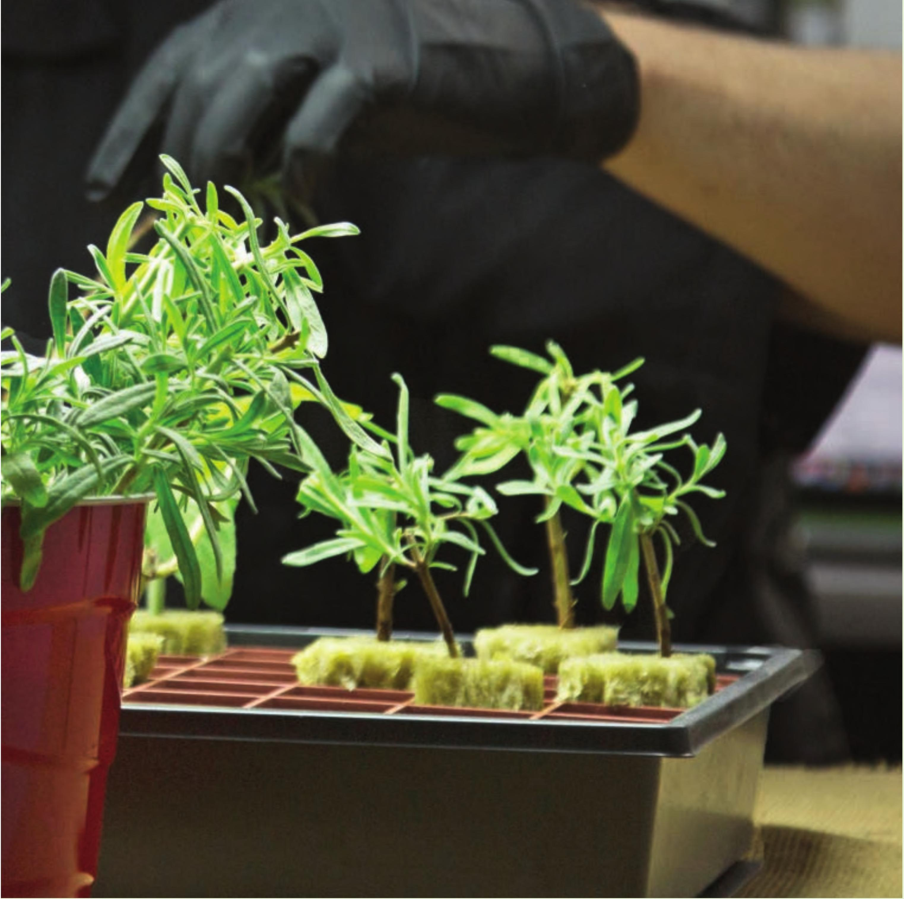
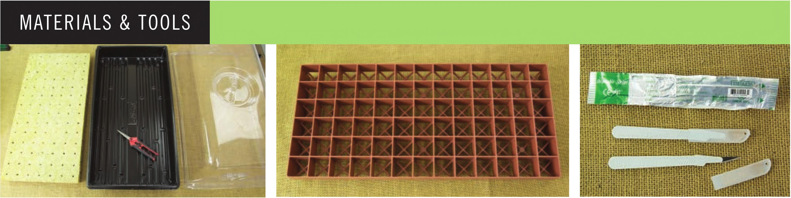

• Suitable Locations: Indoors or greenhouse with shade • Growing Media: Stone wool • Electrical: Required indoors, not required outdoors • Crops: Basil, mint, sage, rosemary, thyme, lavender, tomatoes, peppers, sweet potato, and many more ROOTING CUTTINGS IN STONE WOOL There are many different ways to root a cutting and there are many variations in technique within these methods. This tutorial covers a few of these variations; please experiment and see what works best for you, your crop, and your unique cloning environment. Stone wool starter cubes (Grodan A-OK 36/40) Nutrient solution 10 x 20" solid bottom tray Sharp pruners and/or scalpel Rooting hormone (optional) Tall vented humidity dome 2' 4-bulb T5 fluorescent light Seedling heat mat with controller (optional) Gro-Smart tray (optional) 142 DIY HYDROPONIC GARDENS

